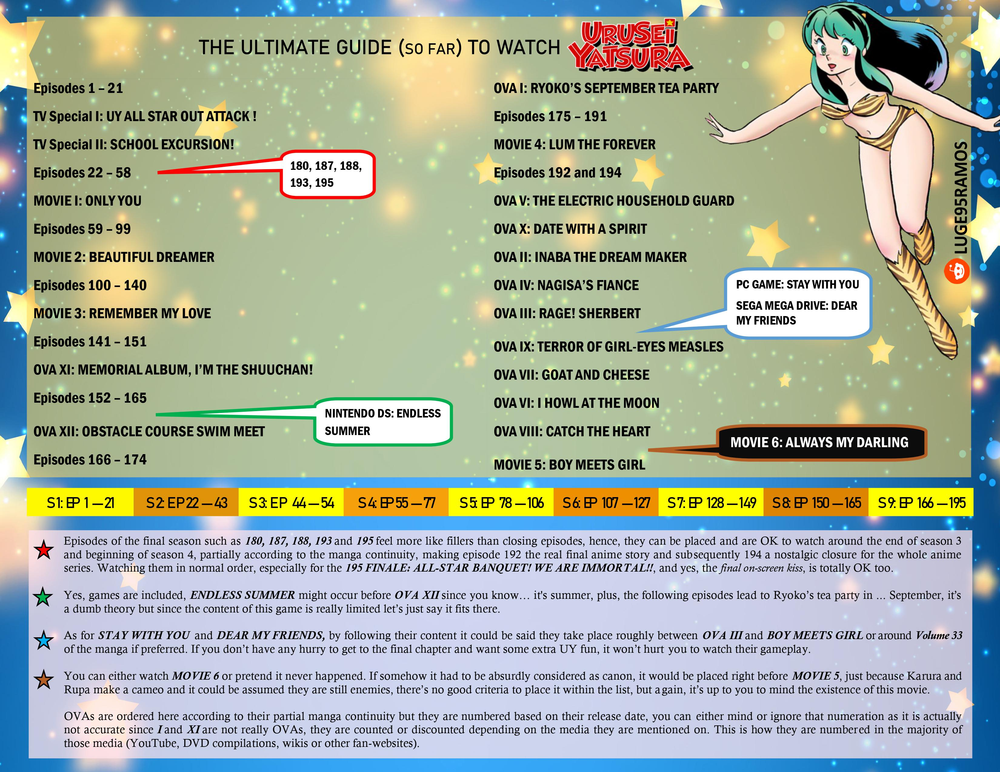

Rating : ⬤ ⬤ ⬤ ⬤ 〇
Opis anime
Urusei Yatsura to swoista komedia romantyczna, rozgrywająca się w trójkącie Shinobu – Ataru – Lum. Bohater chciałby romansować z Shinobu, Lum uważa, iż Ataru należy do niej, zaś Shinobu, nieznosząca Lum, coraz bardziej zastanawia się, kogo właściwie kocha Ataru. Poza tą trójką przez ekran przewija się prawdziwa armia postaci drugiego i trzeciego planu – poznamy m.in. młodszego brata Lum, który nie cierpi Ataru, jej eks-chłopaka, w chwilach wściekłości zmieniającego się w godzillopodobne monstrum, usiłujących przeżyć to wszystko rodziców Ataru, jego kumpli ze szkoły, wiecznie zazdrosnych o Lum, oraz wiele, wiele innych postaci, które wraz z kolejnymi epizodami pojawiają się na ekranie. W dużej mierze to właśnie postaci stanowią o sile Urusei Yatsura – znajdziemy tu np. grupę dziewcząt z klasy Ataru, które uznały, iż Lum należy bronić przed naszym bohaterem (niech żyje solidarność jajników!), a nawet Spice Girls (choć anime powstało na wiele lat przed rozpoczęciem kariery tego girls bandu). Bohaterowie Urusei Yatsura wymykają się ogólnie przyjętym standardom normalności, ktoś mógłby stwierdzić wręcz, że psychopaci są tam w przewadze, jednakże trudno ich nie polubić. Są zwyczajnie zbyt sympatyczni.
Co musisz wiedzieć...
Obecnie wychodzi odnowiona współczesna wersja „Urusei Yatsura (2022)”. Jest kilka movie będącymi side story do głównej fabuły. Ztego tez powodu wyróżniamy kolejność oglądania (watch order):

{kind=link}
Trailer
Alternatywne nazwy
Urusei Yatsura, Those Obnoxious Aliens, Lum the Invader Girl, うる星やつら